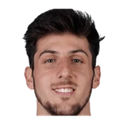

“I think for them, they saw an opportunity they had in their team to open up a window. With Donovan and the young group, I think they’re gonna be very good. To get a good return, you have to give up something good as well. They certainly gave up a lot. Meaningful for them, and it was a meaningful trade that we liked as well.”
What Justin Zanik has said about other NBA players and coaches
12 quotes from Justin Zanik about 10 other people around the NBA, newest first. Each one links to its original source.
Best quotes
Jazz GM Justin Zanik said.
“In this organization, we are extremely aggressive with pursuing any and all means necessary to make this a championship-caliber roster. When those opportunities come up, we’re ready for it. There weren’t any. “And so to sit there and not do anything, we decided that our plan was to completely throw our focus into our young guys and the best player on our roster in Lauri Markkanen.”
Andy Larsen:Quin Snyder comment on new roles for Dennis Lindsey and Justin Zanik:
“I greatly appreciate working with Dennis and Justin and our entire basketball operations department. Having continuity with good people is certainly a positive and look forward to our continued work together.”
What NBA players and coaches have said about Justin Zanik →
Quotes per season
Justin Zanik talks most about
 Justin Zanik on Donovan Mitchell4 quotes
Justin Zanik on Donovan Mitchell4 quotes Danny Ainge1 quote
Danny Ainge1 quote- Dennis Lindsey1 quote
 Hassan Whiteside1 quote
Hassan Whiteside1 quote Lauri Markkanen1 quote
Lauri Markkanen1 quote
Leandro Bolmaro1 quote Rudy Gay1 quote
Rudy Gay1 quote Rudy Gobert1 quote
Rudy Gobert1 quote- Ryan Smith1 quote
 Walker Kessler1 quote
Walker Kessler1 quote
2024-25
1 quoteJazz GM Justin Zanik said.
“In this organization, we are extremely aggressive with pursuing any and all means necessary to make this a championship-caliber roster. When those opportunities come up, we’re ready for it. There weren’t any. “And so to sit there and not do anything, we decided that our plan was to completely throw our focus into our young guys and the best player on our roster in Lauri Markkanen.”
2022-23
6 quotesEric Walden:Justin Zanik, on the offseason he and Danny Ainge had:
“This is the craziest and longest offseason of his career,and certainly of mine. If I had to use one word, it would be 'never-ending.'”
“I think for them, they saw an opportunity they had in their team to open up a window. With Donovan and the young group, I think they’re gonna be very good. To get a good return, you have to give up something good as well. They certainly gave up a lot. Meaningful for them, and it was a meaningful trade that we liked as well.”
Justin Zanik on Leandro Bolmaro:
“A former 1st round pick and getting settled here in the United States. He's big, he can play multiple positions and can handle the ball. We're hoping to integrate him here in summer league now that the trades official.”
Justin Zanik on Leandro BolmaroTwitter @BensHoops
Justin Zanik:
“Donovan has been very supportive of all of the things that we're doing.”
Justin Zanik on Donovan Mitchell:
“He's a high character, highly motivated player who wants to be great. We continue to give him resources to do that and accomplish that. He is a driven young man.”
Justin Zanik on Walker Kessler:
“We're excited about Walker Kessler,he’s a first round pick and a center who put up some really good numbers, both offensively and defensively for a top program in Auburn.”
2021-22
4 quotesRyan Miller:Justin Zanik on Rudy Gobert and Donovan Mitchell:
“All the outside narratives is just a bunch of noise. Internally, I see it every day, these guys care about each other.”
Ben Anderson:Justin Zanik on the addition of Rudy Gay:
“He offers things, better leadership, toughness, size...he compliments Bojan and Royce and other our forwards.”
Ben Anderson:Justin Zanik on the marriage between the @Utah Jazz and Hassan Whiteside:
“I think the role that we had was a real role every night. And in the event of injuries he's a guy that started games for playoff teams.”
Ben Anderson:Justin Zanik on new @utahjazz owner Ryan Smith:
“Ryan's resources and commitment to spending are going to be at levels that we've never done with the Jazz.”
2018-19
1 quoteAndy Larsen:Quin Snyder comment on new roles for Dennis Lindsey and Justin Zanik:
“I greatly appreciate working with Dennis and Justin and our entire basketball operations department. Having continuity with good people is certainly a positive and look forward to our continued work together.”